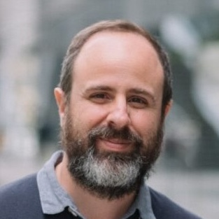

Invited Speakers
Pablo Barceló
Universidad Católica de Chile and IMFD Chile and CENIA Chile

Language Generation in the Limit: Complexity Barriers and Implications for Learning
Kleinberg and Mullainathan showed that language generation in the limit is always possible at the level of computability: given enough positive examples, a learner can eventually generate data indistinguishable from a target language. However, such existence results do not address feasibility. We study the sample complexity of language generation in the limit for several canonical classes of formal languages. Our results show that infeasibility already appears for context-free and regular languages, and persists even for strict subclasses such as locally threshold testable languages, as well as for incomparable classes such as non-erasing pattern languages, a well-studied class in the theory of language identification. Overall, our results establish a clear gap between the theoretical possibility of language generation in the limit and its computational feasibility.
David Chiang
University of Notre Dame
So are they Turing-complete or not?
One of the seminal papers in the study of transformers as formal language recognizers was Pérez et al.’s proof that transformers (with chain-of-thought) can simulate Turing machines. It theoretically predicted, by several years, the empirical finding that chain-of-thought vastly increases transformers’ expressivity. But the definition of transformer used in this proof departed in a few ways from real transformers, and since then, a number of new proofs have appeared, also departing in their own ways from real transformers. This talk, which will be half tutorial, half research results, and half unanswered questions, will look at these proofs, see how they vary and what they have in common, and ask why real transformers seem to be so close to, and yet not quite, Turing-complete.
Will Merrill
Allen Institute for AI and Toyota Technical Institute at Chicago
Expressivity and Scaling: How Do Theory and LLM Pretraining Relate?
Theoretical results about expressivity have informed the development of language modeling architectures, particularly linear RNNs with expressivity advantages over transformers. While theory has played a role in the design of these architectures, there is also perhaps some gap between the questions theorists analyze and the practical concerns of model builders. Motivated by experience and results from the Olmo Hybrid model, this talk will aim to provide a blueprint for researchers to understand the interplay between expressivity results and large-scale language modeling research. I will start by surveying linear RNNs, current understanding of their expressivity, and the way that theory has informed their development. I will then take a detour to overview the parallel scaling paradigm commonly used to develop language modeling architectures in practice, highlighting places where it connects to or diverges from analyzing expressivity. I will conclude with some recent results, speculation, and open questions regarding how expressivity and scaling—two paradigms that ask different questions about architectures—could be combined for a richer understanding of how we should design language models.
Naomi Saphra
Kempner Institute at Harvard University and Boston University
You Know It or You Don’t: Categorical Differences in Language Model Behavior
While years of scientific research on model training and scaling assume that learning is a gradual and continuous process, breakthroughs on specific capabilities have drawn wide attention. Why are breakthroughs so exciting? Because humans don’t naturally think in continuous gradients, but in discrete conceptual categories. If artificial language models naturally learn discrete conceptual categories, perhaps model understanding is within our grasp. I will describe what we know of categorical learning in language models, and how discrete concepts are identifiable through empirical training dynamics and through random variation between training runs. These concepts involve syntax learning, weight mechanisms, and interpretable patterns---all of which can predict model behavior. By leveraging categorical learning, we can ultimately understand a model's natural conceptual structure and evaluate our understanding through testable predictions.